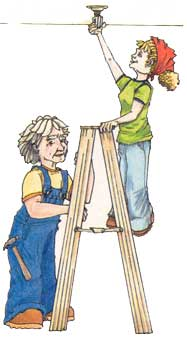

Save Energy And Money Now!
These simple home energy improvements will reduce your energy bills by up to 50 percent!
By Joe Hurst-Wajszczuk
October/November 2001
First some good news ... According to some energy experts, homeowners probably won't have to shoulder another big increase in their fuel bills this winter. The bad news? Fuel prices aren't expected to drop, either. We are faced with two options: We can continue to pay sky-high energy bills, or do something about it. Now, the really good news: Follow the steps we've outlined here and you can easily reduce your energy bills by up to 50 percent.
Most of these techniques are inexpensive, and many can be completed in a weekend. Others may only require that you change a habit or two. To learn how you can get the larger projects to pay for themselves, check out Getting Paid to Save with an Energy Efficient Mortgage.
Hang on to Your Heat
Considering that heating and cooling costs make up about 44 percent of the average home utility bill, you'll want to make this a conservation priority. Start with some small, simple steps. Caulk. weatherstripping and insulation don't sound as exciting as the latest generation solar or geothermal systems, but according to Michael Lamb, a certified energy manager at the Energy Efficiency and Renewable Energy Clearinghouse (EERC), "They're the tried and true fixups that work the best."
A few weatherproofing projects like the ones listed here easily can cut 10 to 30 percent off the average home energy bill.
Find and fix drafts. Professional auditors use a device called a smoke pencil to locate leaks, but you can get similar results with an incense stick. On a windy day, hold the lit stick next to your windows, doors, plumbing fixtures, electrical outlets, ceiling fixtures and attic hatches - anywhere there's a possible path to the outside. Any change in the smoke column means cold air is entering in or heat is escaping. Find the leaks and caulk them (here's more information on caulking).
Little holes can really add up. According to Lamb, even if your home is insulated, small gaps and cracks can decrease insulation's overall effectiveness by 30 percent. Keeping inside air inside and outside air outside will help your pocketbook no matter what the season.
To cut down on spaces where cold air can enter your house, seal doors with a draft-defeating nylon door sweep or a "door snake," a long cloth sack filled with dried rice or beans to hold it in place. If you have an attached garage, install a garage-door gasket to stop cold air in its tracks.
Diagnose your ducts. According to Bill Brindle, director of building and utility programs at the Alliance to Save Energy, 20 percent or more of the hot air produced by a furnace never makes it to the homeowner. Ducts lose hot/cold air in two ways: through leaks and through heat transfer in the uninsulated heating or cooling spaces they run through.
Look for leaks first. Pay careful attention to where the duct connects to the register (or boot). A loose-fitting connection means air is leaking into the wall or floor. Inspect the duct runs and seal any cracks or gaps, but don't use duct tape. Duct tape may be the cure-all for everything - except actual ducts. The adhesive dries out quickly and it will cease to hold. Mastic, a thick paste adhesive, can be messy to work with, but it's a more effective alternative.
Insulate the ducts next - at least the visible ones in the attic or basement. There are a number of blanket-type and rigid insulation products designed for use around ducts. Insulating will make these areas cooler. If you use the basement for living space, install new supply and return registers rather than relying on pirated heat from uninsulated ductwork.
Increase insulation. Do you know what's in your attic? More than 30 percent of homes in the United States are not insulated, according to Rick Heede, a consultant with the Rocky Mountain Institute, a nonprofit organization that fosters efficient resource use. Millions more are underinsulated.
According to EERC, some local building codes require lower R-values than the Department of Energy's recommendations. R-values measure resistance to the flow of heat through a given thickness of a material: the higher the R-value, the better the insulator. If you find your home's insulation levels are less than the recommended levels for your area, you need to make this your first improvement project.
Uninsulated recessed ceiling lights are as bad as holes in your ceilings. These lights keep their bulbs cool by letting air flow through holes in the top of the fixture. To correct this, you can add insulation, but remember to allow 3 inches of airspace between the light and the insulation to allow some circulation. A better option is to buy replacement lamps that are marked "LC." This indicates the lamps are approved for direct contact with insulation.
Insulation not only keeps heat inside in winter, it keeps heat outside in summer. If you live in a warmer climate, consider installing a radiant barrier. Thin reflective plastic sheeting installed in the attic under the roof can reduce heat flow by 50 percent, thus reducing air-conditioning costs.
Ventilation plays a large role in controlling moisture and reducing summer cooling bills. As you're insulating, make sure you have adequate attic ventilation (about 1 square foot per 150 square feet of attic space). Also make sure there's good airflow, from the soffit all the way to the ridge.
Turn down the thermostat. Each degree you lower the dial in winter decreases your fuel bill an average of 3 percent. Going from 72 to 68 degrees may not feel like much, but it can save you 12 percent on your energy bill. To save even more, consider a programmable thermostat ($25). For an annual savings of 10 to 20 percent, set the unit to lower the temperature to 60 degrees when you're sleeping or away from home. The thermostat can also save you money in the summer by turning off the air conditioning during the cooler evening hours or when you're not at home.
Change furnace filters. If you have a forced-air heating system, replacing your furnace filters monthly can save about 5 percent on your energy bill. Just as important, clean filters keep dust and grit out of the heater and out of the indoor air. Write the date you change filters on the cardboard frame for reference.
Fix your fireplace. A crackling wood fire provides a primal pleasure, but that roaring fireplace can exhaust 20,000 cubic feet of heated air per hour, and draw in cold air from the outside, forcing your furnace to work overtime. When the fireplace is not in use and the damper is left open, the same amount of heated air escapes up the chimney as from an open, 48-inch-wide window. For maximum savings, the Rocky Mountain Institute's Heede recommends plugging the flue, but if you can't resist the pleasure of open fires, install a set of glass fireplace doors to prevent large volumes of unheated air from escaping. And always keep the damper door closed when not in use.
The spin on fans. Ceiling fans can actually earn their keep. Using about as much electricity as a 100-watt light bulb, a fan's circulating abilities can lower utility bills by providing both cool and warm air. During the summer, a ceiling fan's breeze can make you feel 5 to 10 degrees cooler. If you bump your thermostat up these 5 to 10 degrees, you can shave 15 percent or more off your electric bill. In winter, switch the fan to reverse, and run it on low to move hot air down from the ceiling. If you have cathedral ceilings, bringing the heat down to ground level can save you as much as 10 percent.
Windows of Opportunity
Old windows are almost as bad as having holes in your walls. Single-paned glass windows (still in 62 percent of homes) account for as much as 30 percent of your heating bill. In comparison, today's high-performance windows can cut those bills in half. Most of these savings come from using two panes of glass, separated by a non conductive inert gas, and low-emissivity (low-E) coatings, which allow visible light through, but block infrared ra diation (heat). Low-E coatings can reflect solar radiation away from, or back into a home depending on the climate.
With all the scientific jargon and confusing acronyms, finding the right windows may seem harder than installation. That's where the National Fenestration Rating Council (NFRC) comes in. This nonprofit organization tests windows and then rates them with a standardized system. The results are stuck on participating manufacturer's windows. The NFRC tests four criteria, solar heat gain coefficient, visible transmittance, air leakage and U-factor, which measures how well a window prevents heat from escaping. U-values are the inverse of R-values, so the lower the number, the better.
If you're still confused, look for the Energy Star label. Developed by the U.S. Department of Energy, this label identifies the most efficient windows for specific climates. Star-bearing windows are 15 to 40 percent more efficient than those that simply meet building codes.
Replacing windows is a costly proposition; in most cases, it takes 15 to 20 years for the energy savings to pay back the installation cost. But adding storm windows is much less expensive, and can double the R-value of single-pane windows. Storm windows also help reduce drafts, condensation and frost formation. There are also many other improvements you can do to your existing windows to help them perform at their best.
Cold weather solutions. Start with basic repairs, such as applying putty to loose panes. If you're not planning to open the window during the winter months, seal the sash with removable rope caulk .
Plastic window sheeting creates an insulating dead-air space inside the window. This cuts down on the transfer of heat from inside to outside. With a few rolls of shrink-wrap plastic and a hair dryer, you can cut heat loss by 25 to 40 percent. In winter, you can find these window insulation kits at any hardware store.
Insulating shades use layers of insulating material, a radiant barrier and a moisture resistant layer to help prevent condensation. One manufacturer claims an R-value increase of R 1.3 to R 7.69 over a single-glazed window. A custom-made window shade can cost about $300, but you can make an insulated shade yourself using reflective materials available at most fabric stores for about $4 a yard.
Warm weather solutions. According to Heede, a single 3-by-4 foot window can add as much as $24 a year to summer cooling costs. Here are some ways to save that cash.
White shades or miniblinds can reduce solar heat gain by 50 percent.
Porches, overhangs and awnings are even more effective than blinds because they stop the sun without restricting the breeze. Install the awning so it extends about halfway down the window, blocking the sun during all but the early morning and late afternoon hours.
Low-E films - Low-E plastic films can be installed on existing windows. They let in most visible light, but block out solar radiation. Be wary of less expensive "tinted" films - they can substantially reduce inside light. The films are not easily removable, so if you want to use sunlight in winter for heat gain, they may not be the right choice for you.
The Right Lights
The average incandescent light bulb is a better heater than an illuminator - only 10 percent of the energy it consumes is converted into light energy; the rest is wasted as heat. Maybe that explains why lighting consumes nearly 25 percent of all the electricity generated in the United States. The solution is fast, easy and inexpensive: fluorescent lighting. According to EERC, replacing just 25 percent of your lights in high-use areas with fluorescent's can slash your lighting bill by 50 percent.
Don't let fluores cents' dim history scare you away. Early models did tend to hum and cast a cold, bluish light. But today more advanced ballasts (the mechanism that starts and regulates the light) and improved phosphers make fluores cents indistinguishable from incandes cents. Look for compact fluorescent lights (CFLs). These bulbs have the same screw fittings as standard incandes cents, so you can avoid having to install new fixtures.
Compact fluores cents seem pricey at $25 per bulb, but as the chart at left shows, they last a very long time and will save you nearly $50 per bulb compared to incandescants, while providing the same amount of light.
Appliances
Most homeowners don't realize that the total operating costs for dishwashers, TVs, dryers and other appliances often exceed what you paid for the appliances in the first place. Using inefficient appliances - or efficient appliances inefficiently - can cost you hundreds of dollars each year. Here's how you can plug these invisible energy leaks.
Water Heaters. Heating water costs the average family $160 to $390 per year (electric heaters usually cost twice as much as gas units), or approximately 14 percent of your utility bills.
Lower the heater's thermostat. Most heaters are preset to 140 degrees Fahrenheit, but 115 to 120 degrees is hot enough. If you have to mix cold water with the hot at the tap, then it's set too high. Each l0-degree reduction will save you 13 percent on your water heating costs.
A tank jacket (about $12) will reduce heat loss by 25 to 45 percent, which translates into a 4 to 9 percent savings on your water heating costs. If you're installing a new heater, install it on top of a rigid insulation pad. Protecting the tank from the cold concrete will save an additional 4 to 9 percent.
Drain a quart of water from the tank at least four times a year to keep the heater working at its peak. This will remove waterborne sediment, which builds up in the tank and lowers efficiency. (The sediment interferes with the transfer of heat from the burner into the water.) Check the manufacturer's instructions for the proper draining procedure.
Consider a tankless heater to completely eliminate storage-related heat loss. These systems produce hot water on demand, saving you 15 to 20 percent compared with conventional hot water tanks.
Install a new showerhead. High efficiency showerheads are designed to give plenty of soap-rinsing power, but use only 1 to 2.5 gallons per minute, compared with conventional heads with flow rates of 3.5 to 6 gallons per minute. The head will pay for itself in three months to a year. Retrofitting one showerhead and two faucets can cut your annual heating bill by about $86 if you have an electric water heater - $36 if you use natural gas - and will reduce water bills an average of $33.
Take showers instead of baths. With a high-efficiency head, you'll use less than 10 gallons for a five-minute shower.
Consider a solar or solar-assisted water heater. It's difficult to calculate the savings, but the vast majority of the 1.5 million homes and businesses that already use these systems think they're a great investment.
Clothes washers and dryers. Laundry is one of the most energy-intensive activities. On average, it costs more than $150 per year to wash and dry clothes. Most of the energy used in washing goes to heating the water. Switching from hot to warm or cold when possible can cut the energy used in half.
Run full loads, or use the load select option to best match water level with the amount of clothes being washed.
With dryers, dry multiple loads one after the other to make use of leftover heat. Using the moisture sensor instead of a timer can reduce energy use by 15 percent, saving you about $12 per year. This feature prevents the dryer from wasting heat on already dry clothes.
Buy a new washer. Energy-efficient washers cost more than their less efficient counterparts, but they use less water, less detergent and require less drying time. According to the Rocky Mountain Institute, replacing our old washer with a new front-loader can save $100 per gear in energy, water and detergent.
Refrigerators. Refrigerators use more electricity than any other appliance. Some older models cost as much as $150 yearly in energy use.
To boost efficiency of an old refrigerator, keep it cool. Position it out of direct sunlight and away from heat-generating appliances like the stove or dishwasher.
Perform regular maintenance. Clean the coils at least once a year and check door seals (they should be able to firmly grip a dollar bill) by shining a bright flashlight inside with the door closed. If light escapes, so will cold air.
Turn off the auto-defrost. In addition to dehydrating food and causing freezer burn, auto-defrost consumes more electricity.
Buy a new refrigerator. If your refrigerator is more than 10 years old, it may be time to buy a new one. According to Bill Brindle, a new Energy Star rated refrigerator will save you $35 to $70 per year compared with your old unit - which adds up to $525 to $1,050 during its 15 year life. Check with your utility company: You may also qualify for a rebate.
Computers. The average home desktop system uses $35 to $40 worth of electricity each year. Practice common sense: Turn off your monitor if it will be idle for 15 minutes or more, and shut off your system when it will not be used for more than two hours. Despite rumors to the contrary, turning a computer on and off will not harm components - in fact, doing so will protect the system in the event of a power surge or blackout.
Consolidate your system. Investing in internal computer applications (faxes, answering machines, etc.) will not only save you money in the purchase price, but they will also use less energy than running several stand-alone appliances.
Logical Landscaping
With a little planning and a lot of patience, good landscaping does a lot more than just pretty-up the homestead. The proper placement of just three trees can save the average home $100 to $250 annually. Check with a local nursery about the best types of trees to plant in your area.
Using trees or shrubs to provide shade for your air conditioner's compressor will help it work 10 percent more efficiently than one in full sun.
Deciduous trees will shade your home from the hot summer sun, while still allowing winter sun to warm the house. Evergreen trees and shrubs are best planted to the north and west sides of your house to deflect winter winds.
Shade trees and/or trellised vines can reduce external temperature by 10 to 20 degrees. Planting them on the west and east sides of your house will absorb sunlight before it gets to your windows, walls or roof.
Strategically plant trees and shrubs to block the sun at various times of day. Low-growing trees and bushes can be planted to block out early morning and late afternoon sun. Moderate-sized trees can block late morning and early evening sun. Tall trees planted close to the house can shade the roof during midday hours.
Beyond the Checklist
For the most up-to-date information on where to find the most energy-efficient appliances and how to use them best, check out the Consumer Guide to Home Energy Savings from the American Council for an Energy-Efficient Economy.
The guide is full of tips, diagrams, charts, explanations and lists on al most every facet of home life that involves energy use: food storage, cooking, dishwashing, heating and cooling systems, and much more.
Finding Phantom Loads
More Resources for Saving Energy
Alliance to Save Energy
(202) 857-0666
American Council for an Energy-Efficient Economy
(202) 429-0063
American Solar Energy Society
(303) 443-3130
Department of Energy Office of Energy Efficiency & Renewable Energy
(800) 363-3732
Energy Star
(888) 782-7937
National Fenestration Rating Council
(301) 589-6372
Rocky Mountain Institute
(870) 927-3851
|
PHOTO: INFRASPECTION INSTITUTE Not a pretty picture. Bright areas in this thermal photograph show where the home is losing heat. |
 JOHN A. JACOBS JR. Little gaps can mean big energy losses in terms of escaping heat. Be sure all your exterior doors have good weatherstripping. |
JOHN A. JACOBS JR. Millions of American homes are underinsulated, letting energy efficiency fly right out the roof. |
|
JOHN A. JACOBS JR. Ceiling fans can make your home feel more comfortable in the summer, so you can set the thermostat to a higher temperature. |
JOHN A. JACOBS JR. Each degree you lower the thermostat dial in winter decreases your heating bill an average of 3 percent. |
JOHN A. JACOBS JR. Fireplaces are big energy losers. Installing glass doors can help you cut down on fireplace energy waste |
|
 JOHN A. JACOBS JR. Compact fluorescent lights can cut your lighting costs by 50 percent compared to incandescent bulbs |
JOHN A. JACOBS JR. Be sure to apply weatherstripping around all your doors. |
MOTHER EARTH NEWS STAFF To maximize your return on investment, start your conservation strategy by focusing on the biggest energy drains first. |